Pictures of everything in the three briefs, before anything is built. Every 3D picture is a real-time three.js render made with the game's own scanned bodies, skeleton and camera, plus procedural gear and CC0 textures and skies. So it shows what the game can actually draw, not a painting. The HUD and menu screens are live HTML mockups.
CONCEPT PASS · NOTHING IN THE GAME HAS CHANGED · PICK, MIX OR REJECT
PROMPT 1 · §1Tactical operators
Covered head to toe: helmet with comms and NVG mount, a balaclava with one slit (only the eyes and the bridge of the nose show: they're the scan's real eyes, they still move and blink), plate carrier, pouches, gloves, knee pads, boots. Camo fabric, cordura webbing, scratched polymer and anodised metal, dust low on the legs. Built on the game's scanned body and skeleton, so every move, emote and fall already in the game plays on it.
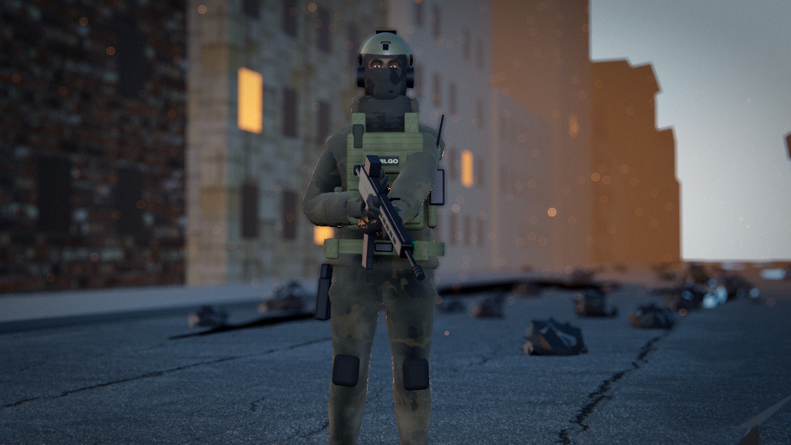
Hero: low ready, ruined street at sunsetMax tier: sky-lit, sun rim, haze, depth of field. Body 19.7K triangles (High) + gear ≈ 6K in 3 merged draws.
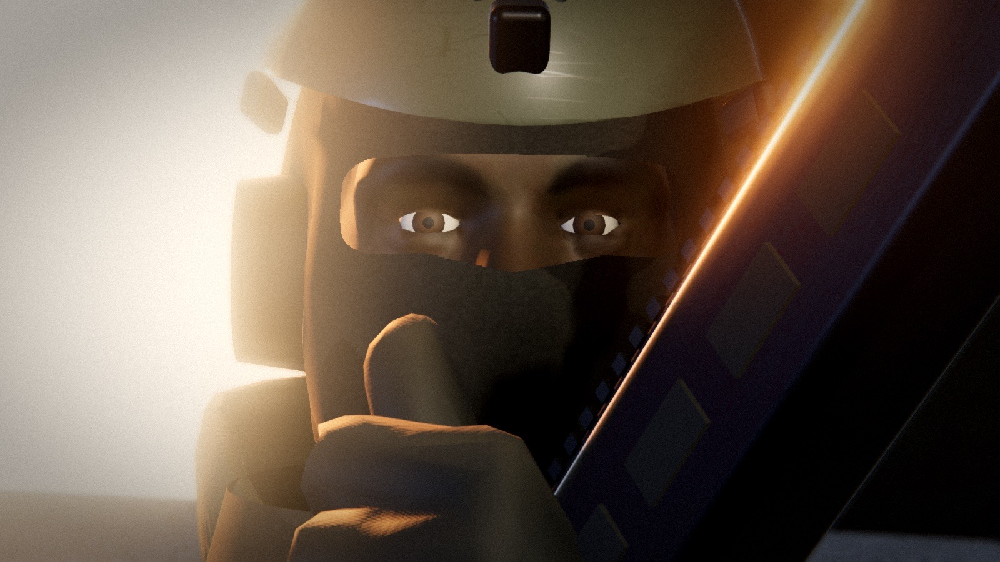
Only the eyes and the bridge of the noseThe balaclava is shrink-wrapped to the scanned face; the slit is cut from the eye positions.TurnaroundFront, three-quarter, side, back. Three kits are built (Ironwood shown; Ash urban and Dune arid).
PROMPT 1 · ITEMS BECOME ARMOURPick up, grow, become a monster
In both modes every item is now armour. Points fill four thresholds; each tier puts a heavier, scarier suit on you and makes you bigger. At Titan you're a giant.
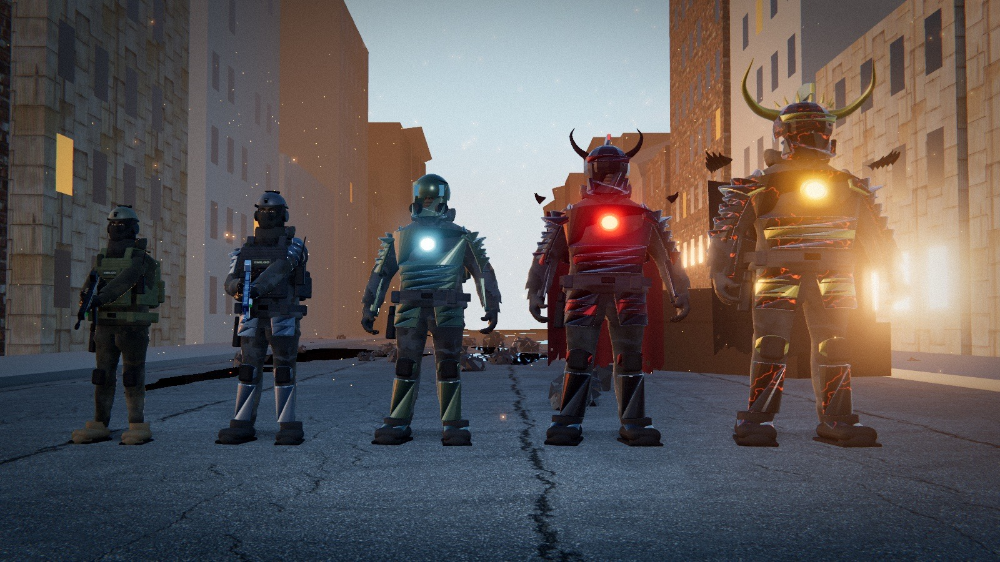
T0 Operator → T1 Plated → T2 Juggernaut → T3 Warlord → T4 TitanHard-surface plates (bevelled, bent round the body, faceted so edges catch light), horns, capes, glowing cores and eyes.
Tier
Size
Armour
The suit
Balance (proposal)
T0 Operator
1.00×
0
Base kit
Hitbox grows half as fast as the look. −3% speed per tier. Armour drops as loot when you fall, so giants are worth hunting. +1.5K triangles and +1 draw per tier on High.
T1 Plated
1.06×
+25
Pauldrons, vambraces, tassets, greaves
T2 Juggernaut
1.15×
+60
Sealed helm with a visor, chest core, bomb-suit bulk
T3 Warlord
1.27×
+100
Spiked black plate, horned helm, ember eyes, torn cape
T4 Titan
1.45×
+160
Obsidian and gold, bull horns, crown, molten cracks, sun core
PROMPT 1 · §2Dead Streets zombies
Grey-green rotting skin with veins and lesions, sunken bruised sockets, milky glowing eyes, blood down the chin, filthy clothes with wounds through the tears, exposed ribs or forearm bone. One shader on the scanned bodies, so the eight kinds share one rig. Blood stays behind the setting (off by default in the EMILGO app).
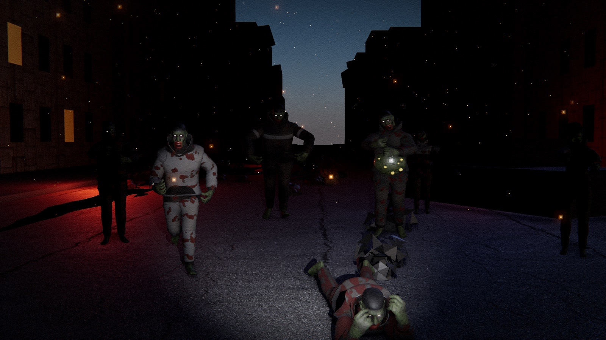
The eight kinds in your torch beamShambler, Okada Runner, Crawler, Ata Bloater (swollen belly), Screamer, Agbero Brute (big), Pool Lurker (waist-deep), Masked (cracked gas mask: a modern mask, never a traditional one).
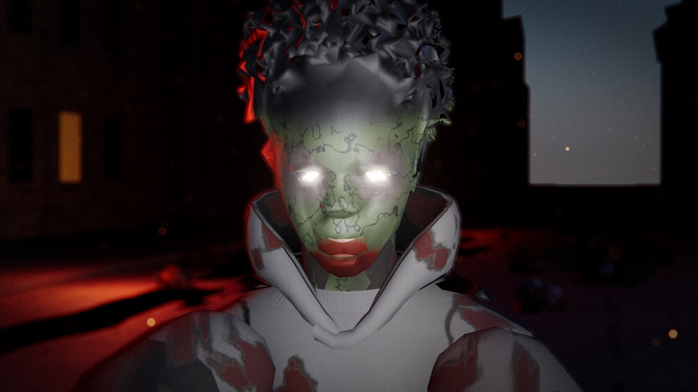
Close-upFor film-level realism the last step is sculpted meshes (commissioned or licensed); this is how far the shader gets.
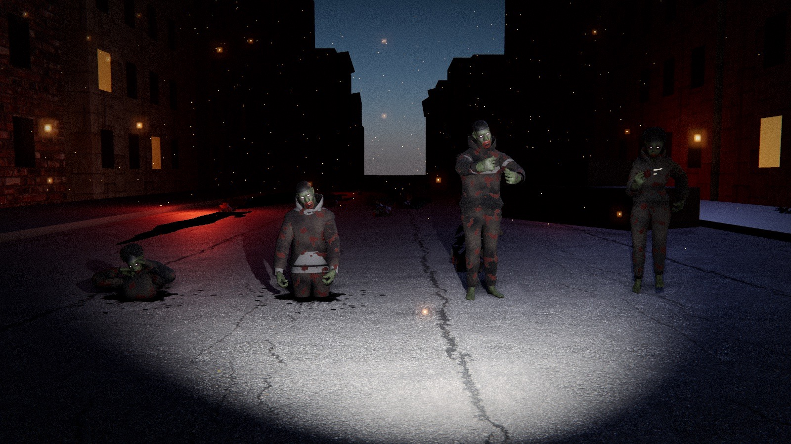
Emerging → standing → lungeA crack decal, hands first, then the body over 2.5 s (the game's rise, with new emerge/lunge/claw clips).
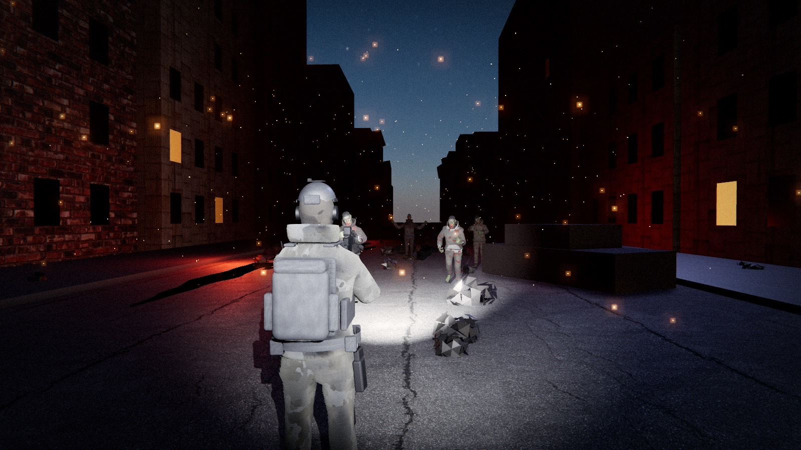
In playThe game's own camera: 2.5 m back, 0.5 m right; the gun torch is the light.
Free For All becomes a shooter: spawn with a sidearm, find rifles, SMGs and shotguns; the machete and Gidigbo melee stay as backup. ADS, recoil patterns, spread, reloads, hit markers. Loot looks like treasure: six rarities with their own finish, light pillar and sound. Generic gun names only (no made-up brands).
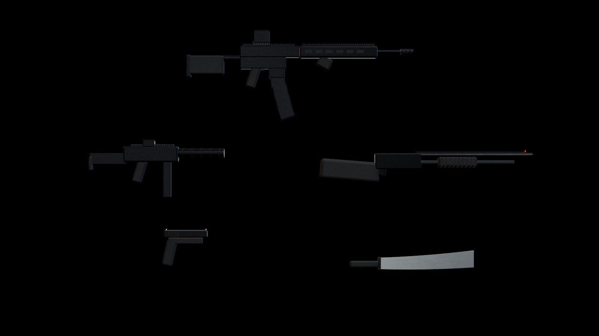
Rifle, SMG, shotgun, sidearm, macheteConcept geometry (2–4K triangles each); final guns get a proper modelling pass.
Armour pick-ups as relicsKevlar insert, steel plate, ceramic plate, reactive core, Warlord crest, Titan heart; the Airfall chest in front.
PROMPT 2 · MASSIVE WORLDEleven places that each look different
One 1.6 × 1.6 km world (16× today), streamed in 64 m cells. Each place has its own light, fog, grade and sound, so you know where you are without the map. Vistas below use instanced trees, rocks, towers, containers, cranes, tanks and turbines with CC0 Poly Haven skies and ground textures.
How the world streams
Map (top view, minimap texture)
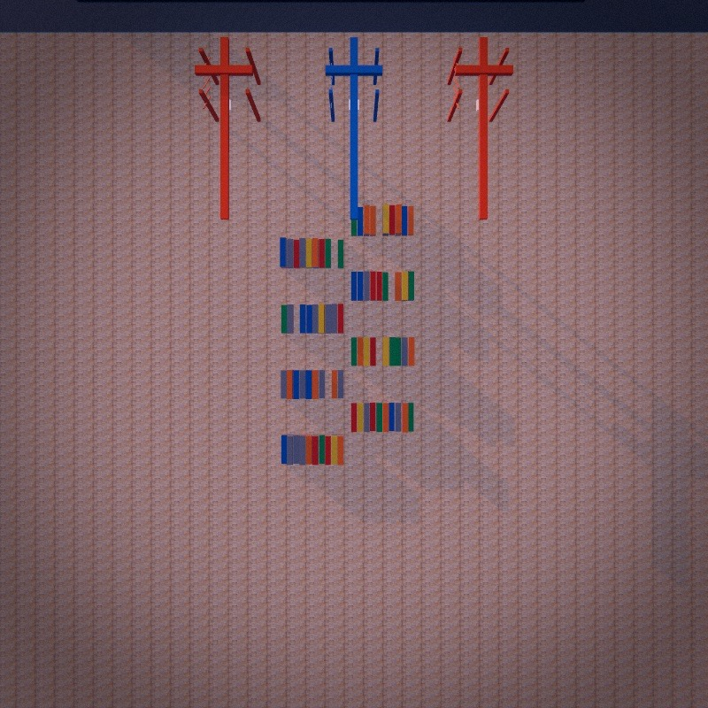
PROMPT 1 · MORE BILLBOARDSBillboards everywhere
The ad system stays exactly as built. New board types join the unipoles: rooftop signs, LED walls on towers, road gantries, bus-shelter panels, painted murals, stadium ribbons and a lobby card. New boards go on the end of each wish list, so booked ids never move. House content only when unbooked (no made-up brands).
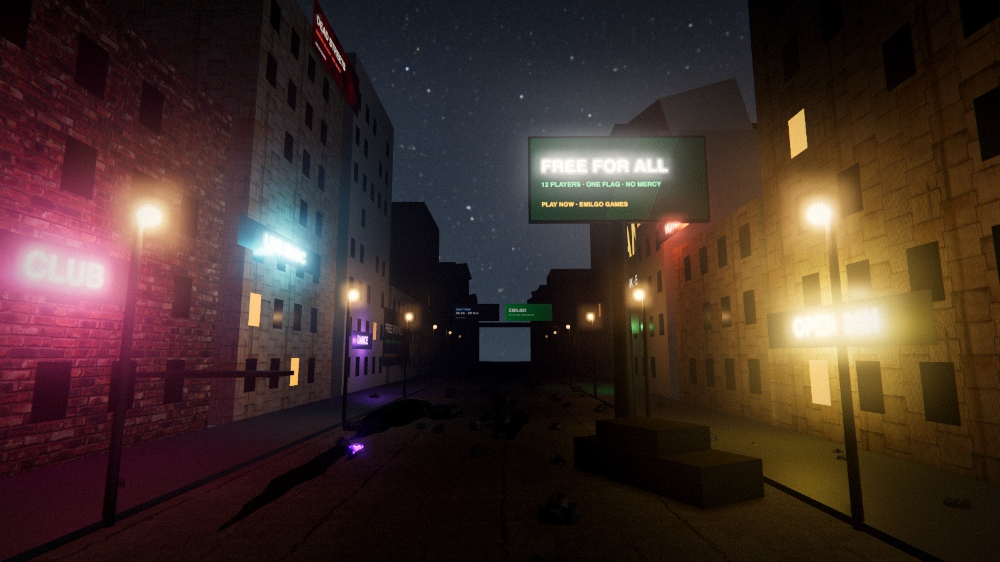
Unipole, rooftop, LED wall, gantry, bus shelter, muralNeon Row at night.
PROMPT 1 · §4 + PROMPT 2 · MAX MODEWhat each phone gets
The honest part: a Tecno/Infinix can't run SSR, SSAO and volumetric fog at 30 fps. It gets Low, which fakes the look. Max Mode is for strong phones and computers. Same shot, four tiers:
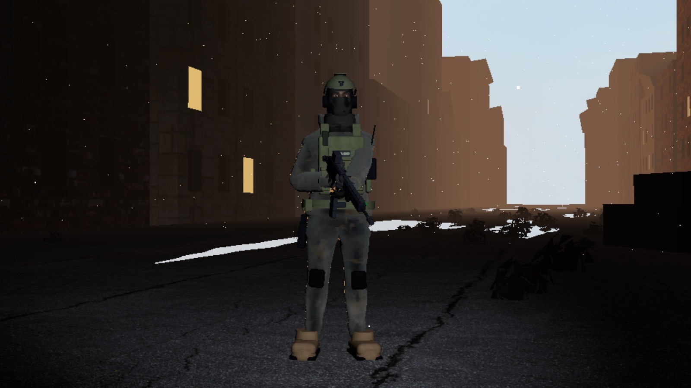
Low · Tecno/InfinixLambert, no shadows, 0.6 render scale, fog, the grade in the lights.
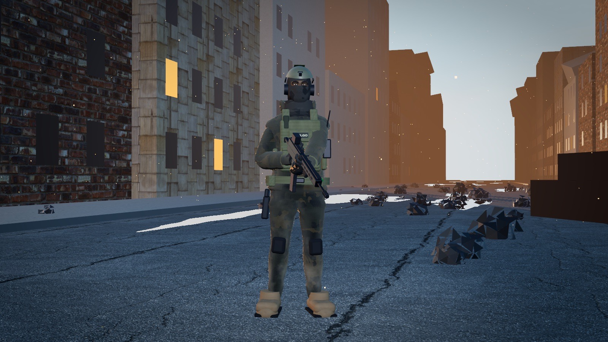
Medium · most phonesPBR, shadows near you, one grade pass.
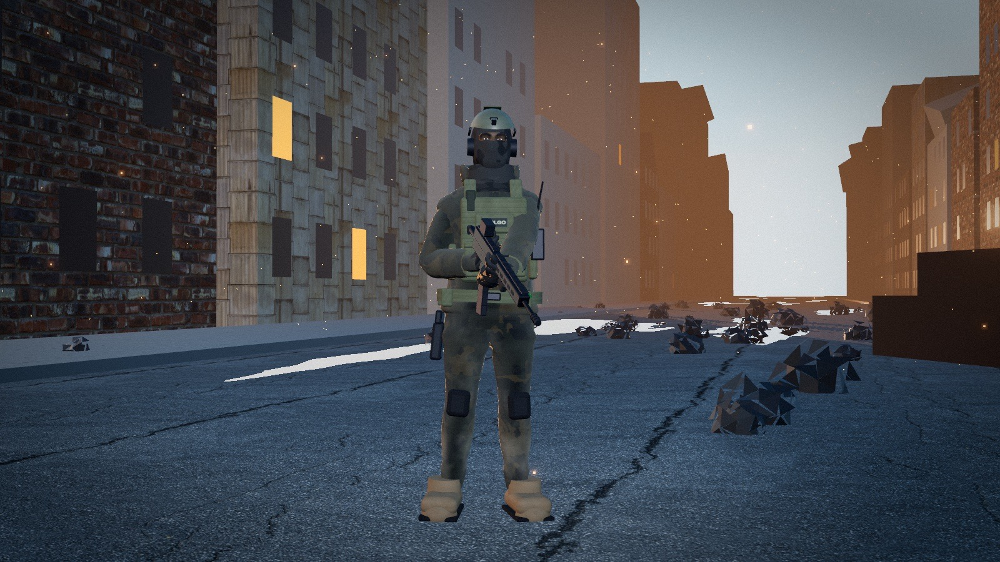
High · strong phones+ bloom, grain, cascaded shadows.
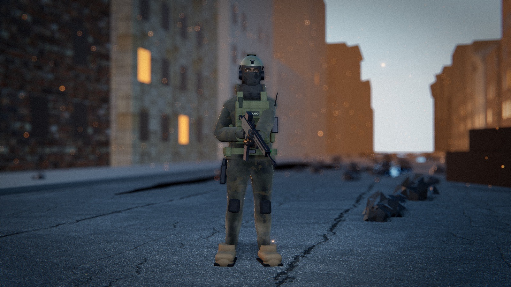
Max · flagships, computers+ ambient occlusion, god rays, mirror puddles, depth of field (aiming), per-place LUT.
PROMPT 3 · STEP 1Four HUD concepts
Each uses all four kinds of game UI (diegetic, non-diegetic, spatial, meta), adapts to Free For All and Dead Streets, and animates with transforms and opacity only (no blur, no particles). Yellow ♪ pins in the "sound map" shot show where each sound fires. Open any of them live and they move.
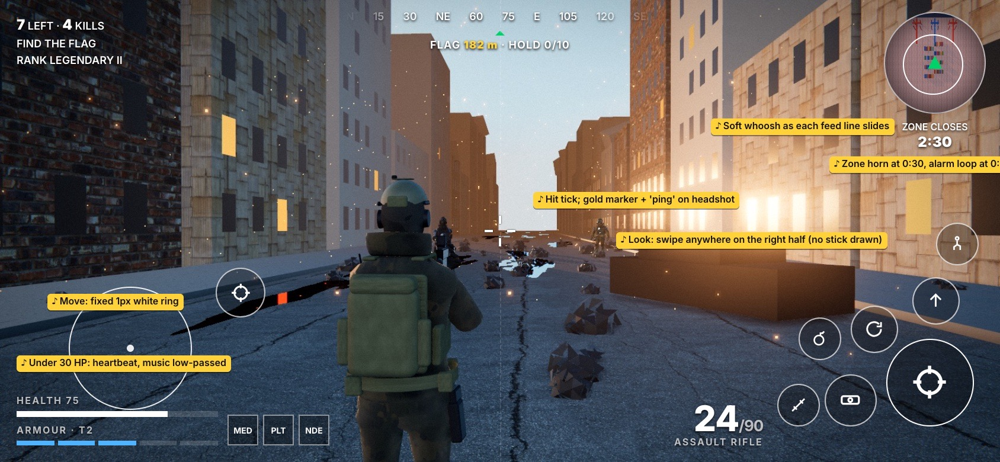
Sound map (concept B)Pins mark where SFX and music changes trigger; the dashed line is the touch look area.
PROMPT 3Victory and defeat
Title slams in, XP rolls with a tick per 50, the bar fills, rank-up badge pops with a chime, loot cards flip in by rarity (whoosh, gold glint on Legendary). Victory fanfare and a defeat sting; back to the lobby the music crossfades. Each concept skins the same skeleton.
PROMPT 1Welcome, lobby, pre-match
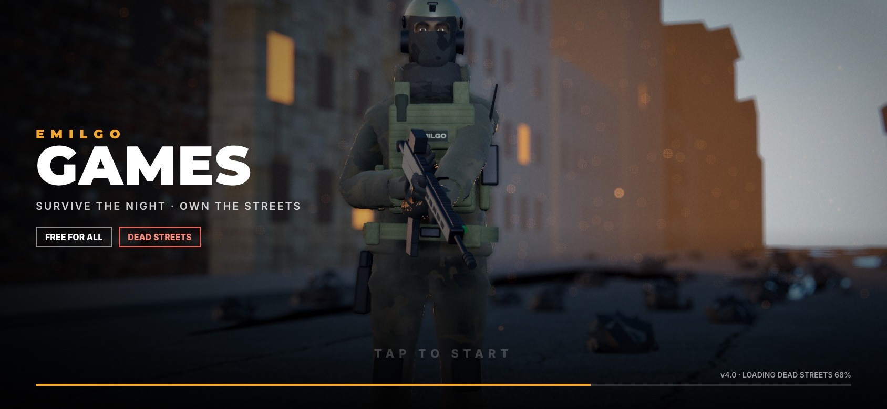
Welcome A · HeroThe operator, the wordmark, both modes, a slim loading bar. One low boom on the logo, then the menu theme.
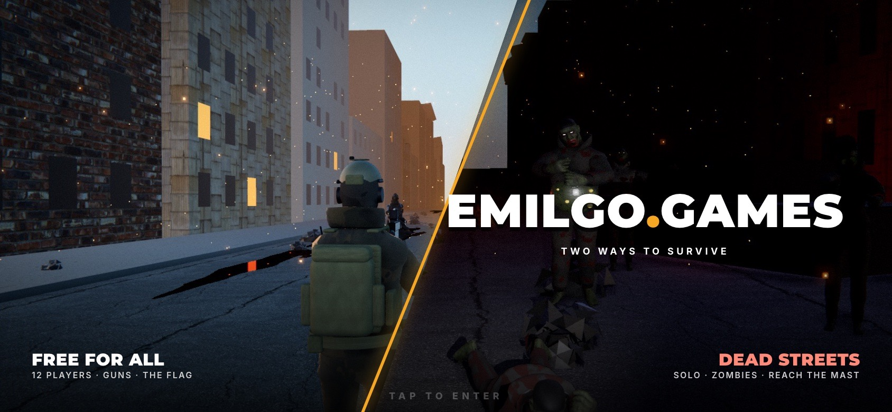
Welcome B · Two worldsFree For All by day, Dead Streets by night, split by a gold slash.
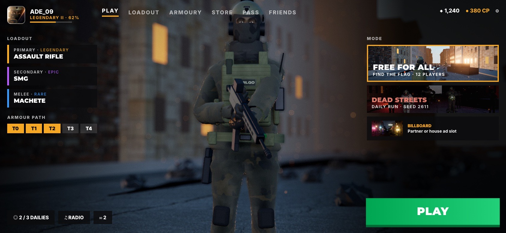
Lobby A · Command deckYou in the middle; loadout and armour path left; modes, a billboard card and a big PLAY right; dailies, radio and mail collapsed to chips.
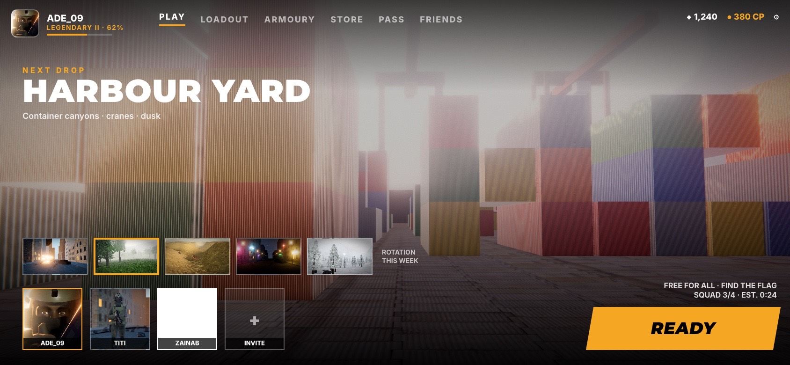
Lobby B · Map tableThe next location full-bleed, this week's rotation, your squad's four slots, READY.
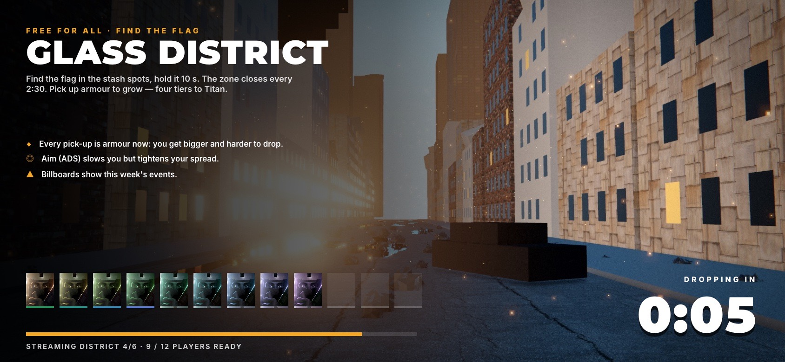
Pre-matchLocation, mode, the goal in two lines, three tips, the 12 players arriving, streaming progress, the drop countdown.
PROMPT 1 · §5 (CRITICAL)The look control: a touchpad, not a stick
Today the right side is a virtual stick that turns at a rate, which is why it feels wrong. The new one turns by how far and how fast your thumb moves, anywhere on the right half outside the buttons. Nothing is drawn (a faint ring is a setting). A small dead zone eats the first pixels of each touch so taps never nudge your aim; slow swipes aim finely, fast flicks turn 180°; let go and the camera stays. Dragging from FIRE aims too. The move stick stays a fixed 1 px white ring.
The demo with its settingsSensitivity, vertical ratio, acceleration, dead zone, presets, the live curve. This maths becomes input/controls.ts.
PROMPT 2 · SOUND EVERYWHEREThe world makes noise
A sample layer on top of today's synthesiser. Every place has emitters you hear grow and fade as you move (pooled spatial voices: Low 6, Medium/High 12), and the music follows the match.
Spatial emitters (radius: loud → silent)
Music states
Explore: the place's own bed (wind, distant life) under a light groove.
Combat: drums come in on the first shot near you, out 20 s after.
Low health: the mix is low-passed, heartbeat on top.
Final circle: tempo up, sub-bass swell as it closes.
Victory / defeat: fanfare or sting; the lobby theme crossfades back.
Pick-ups: rarity sounds (a talking-drum hit for Legendary), armour clank on each tier.
Where the sounds come from
Kenney audio packs: CC0 (UI, impacts).
Freesound: CC0 only (ambiences, foley). Needs an API key.
Pixabay Music / FreePD: free music; or commissioned tracks.
Never BBC Sound Effects (not for commercial use) or anything ripped from other games.
Loaded per mode and place, lazily: the 4 s boot stays.
PROMPT 2 · 1,000+ ASSETS2,898 CC0 candidates
Every Poly Haven model, texture and sky (2,352) and 546 ambientCG materials (of its 2,037), all CC0, tagged by the place they'd serve. None is used as-is: each goes through decimation to 3–4 LODs, KTX2 textures and impostors. Poly Haven's 65 heaviest models are 0.1–17 million triangles; a phone draws about 100K for the whole frame, so trees and big rocks become texture sources and impostors. Megascans (Fab) and Sketchfab need the owner's accounts and licences.
NEXTPlan and questions
The full plan is in PLAN.md: the honest limits, budgets per tier, streaming and memory, guns, armour balance, sound, and ten phases that each wait for your go-ahead.
Phases
1 Look control + the chosen HUD's skeleton
2 Operator gear, armour ladder, LODs
3 Guns: ADS, recoil, spread, reload, hit markers
4 Zombie art pass
5 Graphics tiers, Max Mode post stack
6 Streaming + first 3 locations, asset pipeline
7 The other 8 locations, the big world, billboards
8 Sound layer, emitters, music states
9 Welcome, lobby, pre-match, end screens
10 Real Tecno/Infinix + iPhone, regression
Your answers needed
Which HUD concept (A, B, C, D), or which parts of which?
FFA damage: 100 HP + armour, gun kills, respawns per mode, zone laser kept?
Staked Flag Duel (real money in Lagos Life): melee-only (recommended) or guns?
Spawn with a sidearm, primaries as loot?
World size: 1.6 km square for 12 players, or bigger with more?
Assets on a CDN (your Cloudflare R2)? The app's offline copy keeps lobby, Practice, Dead Streets lite.
CC0-only, or do you hold Fab/Megascans and Sketchfab accounts?
Giants: hitbox at half the visual growth, −3% speed per tier?